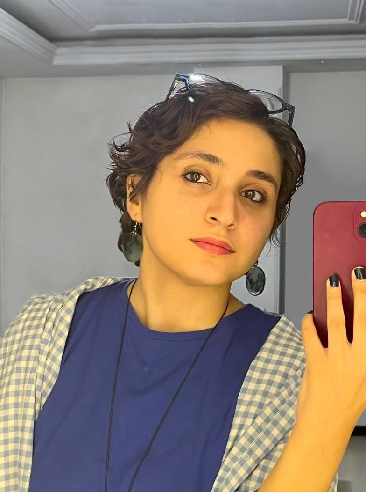

Research Interests
- Product Design and Development
- Engineering Design and Innovation
- Artificial Intelligence and Machine Learning
- Robotics and Intelligent Systems

B.Sc. Mechanical Engineering — Robotics, Control & ML
I have a bachelor’s degree in Mechanical Engineering from Iran University of Science and Technology (IUST). During my studies, I became interested in robotics, control systems, and mechanical design, and worked on research projects involving reinforcement learning.
Over time, I have also become more interested in product design and development, especially the process of turning an idea into something practical. I enjoy both the technical and creative sides of designing and making things.
Outside engineering, I spend much of my time drawing and painting. Art has become an important part of my life and has made me more interested in exploring design from a different perspective.
Robotic & Artificial Intelligence Lab(RAIZ) — Reinforcement Learning for Autonomous Parallel Parking (Mar 2024 – May 2026)
negar.naghavian1@gmail.com
+98-936-572-33-27
March 2024 – May 2026
Supervisor: Dr. Seyed Hassan Zabihifar (Assistant Professor)
Nov 2023
Developed a CNN-based license plate detection and character recognition pipeline. Implemented image-processing-based lane detection and integrated real-time video input with a user-friendly interface.
Related course: Artificial Intelligence
Sep 2023
Implemented human detection using YOLO for fast, accurate identification. Built a CNN classifier for poses (e.g., walking, sitting) and combined both for activity recognition.
Related course: Artificial Intelligence
May 2024
Created a 3D model of the R-3000 Rotopod in SOLIDWORKS and simulated dynamics/kinematics in MATLAB to analyze motion and operational parameters.
Related course: Mechanisms Design
Iran University of Science and Technology (IUST) — Sep 2021 – May 2026
Fall 2024 The School of Mechanical Engineering, IUST
Instructor: Dr. Seyed Hassan Zabihifar (Assistant Professor)
Nov 2024 Oversaw and guided participants.
Fall 2024 The School of Mechanical Engineering, IUST
Instructor: Dr. Majid Rajabi (Associate Professor)
Winter 2025 The School of Mechanical Engineering, IUST
Supervisor: Dr. Amir Hossein Davaie Markazi (Professor)
Winter 2025 The School of Mechanical Engineering, IUST
Instructor: Dr. Majid Rajabi (Associate Professor)
Ranked among the top 0.01% in the nationwide university undergraduate entrance exam (Iran). — Sep 2021
Drawing and painting are an important part of my life. I regularly attend art classes and enjoy exploring different styles, materials, and techniques. I work with watercolor, oil paint, acrylics, oil pastels, and ink, and I also spend time practicing drawing and experimenting with modern art.
I enjoy trying new approaches to painting and learning how different materials can be used to express ideas. Art is something I genuinely enjoy, and it has also made me more interested in the creative side of design.
Paintings and studies in different styles and media.
For collaborations, positions, or research inquiries, please email negar.naghavian1@gmail.com.